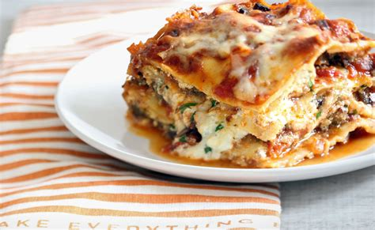

Lasagna

Description
Home made lasagna with fresh vegetables. A easy to do recipe.
Ingredients
1/2 pounds lean ground beef
1/2 cup onion
4 gloves garlic
2 can tomatoes
12 ounces tomato paste
13 ounces tomato souce
1/2 cup water
1 tablespoon with sugar
1/4 teaspoon black pepper
12 lasagna noodles
16 ounces cottage cheese
1 egg
1 pound mozzarella cheese
3/4 cup Parmesan cheese